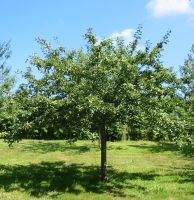
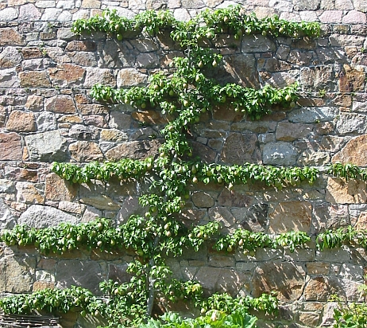
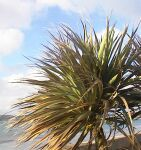

un pommyi

un paithyi

un palme
|
|
Jèrriais |
Angliais |
| |
|
|
d'la blianche êpîngne |
Hawthorn |
|
du bouisque |
Box |
|
du louothi, du louothyi |
Laurel |
|
du saux |
Willow |
|
du seu |
Elder |
|
la charmille |
Hornbeam |
|
la néthe êpîngne, lé preunellyi |
Blackthorn |
|
lé baûmyi |
Balsam Poplar |
|
lé blianc-bouais |
White Poplar |
|
lé cyprès |
Cypress |
|
lé cyprès d'chînm'tchiéthe |
Weeping Cypress |
|
lé limongni |
Lemon tree |
|
lé méaguinné, l'acajou |
Mahogany |
|
lé pêchi |
Peach tree |
|
lé plieuthant, des chabots |
Laburnum |
|
lé preunyi |
Plum tree |
|
lé sapîn |
Fir, Spruce |
|
lé spruche |
Spruce |
|
lé tique |
Teak |
|
un (ou eune) orme |
Elm |
|
un aune |
Alder |
|
un badgiolyi |
Dwarf wild cherry |
|
un bouais d'coing |
Quince tree |
|
un bouôlias |
Silver Birch |
|
un cèdre |
Cedar |
|
un chât'nyi |
Sweet Chestnut |
|
un chât'nyi à j'va |
Horse Chestnut |
|
un chérîsyi |
Cherry tree (short stemmed) |
|
un codriyi |
Hazel |
|
un fau |
Beech |
|
un frêne |
Ash |
|
un housse |
Holly |
|
un if |
Yew |
|
un magnolia |
Magnolia |
|
un mârronyi |
Chestnut |
|
un meîlyi |
Medlar |
|
un mélèze |
Larch |
|
un mérîsyi |
Cherry tree (for wood) |
|
un myrtre |
Myrtle |
|
un nouoyi |
Walnut |
|
un orangyi |
Orange tree |
|
un paithyi |
Pear tree |
|
un paithyi sauvage |
Wild Pear |
|
un palme |
Palm |
|
un peuplyi |
Poplar |
|
un pommyi |
Apple tree |
|
un sycomôre |
Sycamore |
|
un tchêne |
Oak |
|
un tchoeuryi |
Cherry tree |
|
un tilleul |
Lime |
|
un trembl'ye |
Aspen |
|
un vèrt tchêne |
Evergreen Oak or Holm Oak |
|
un vèrt-bouais |
Spindle-tree |
|